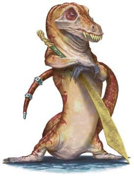

中型类人生物（爬虫）

| 生命骰： | 3d8 (13 hp) |
| 先攻： | +2 |
| 速度： | 20 英尺，攀爬 15 英尺，游泳 50 英尺 |
| 防御等级： | 17 (+2 敏捷，+2 大型木盾，+3 天生)，接触 12，措手不及 15 |
| 基本攻击／擒抱： | +3/+4 |
| 攻击： | 弯刀 +4 近战，或啮咬 +4 近战 |
| 全力攻击： | 弯刀 +4 近战，或啮咬 +4 近战 和 弯刀 �C1 近战，或 弯刀 +4 近战 和 啮咬 �C1 近战 |
| 伤害： | 弯刀 1d6+1（作为次要攻击 1d6）；啮咬 1d4+1（作为次要攻击 1d4） |
| 面宽／触及： | 5 英尺./5 英尺. |
| 特殊攻击： | 蛇形诅咒 |
| 特殊能力： | 黑暗视觉 60 英尺 |
| 豁免： | 强韧 +1，反射 +5，意志 +3 |
| 属性： | 力量 12，敏捷 15，体质 11，智力 8，感知 11，魅力 10 |
| 技能： | 攀爬 +9，躲藏 +3*，聆听 +3，潜行 +3，侦查 +3，游泳 +10 |
| 专长： | 警觉，闪避 |
| 地域： | 温暖森林和地底 |
| 组织： | 单独或氏族（3�C12 个） |
| 挑战等级： | 2 |
| 宝物： | 标准 |
| 阵营： | 通常混乱中立 |
| 进化： | 4�C5 HD（中型）；6�C9 HD（大型） |
劣蛇人是一种恶毒但卑躬屈膝的爬虫类种族，最常见于作为蛇人（Yuan-ti）的奴隶。它们看起来像长着类人手臂和手掌的大蛇，其尾巴相对于身体来说短小而发育不良。它们的鳞片通常是斑驳的绿色和黄色，某些个体身上有时会出现棕色、黑色和红色。它们的鳞片会自然变色以帮助这些生物融入树木繁茂或地底的环境。
劣蛇人使用通用语和蛇人语（Yuan-Ti），有些也会学习龙语（Draconic）。
劣蛇人并不聪明，但它们经常在更聪明的生物（例如娜迦或蛇人）的领导下战斗。它们能很好地利用其天然伪装能力进行突袭，尽管它们对远程武器的厌恶使得这一优势的效果不如原本可能的那样好。它们可以用其类人手掌舒适地挥舞武器，但尽管如此，劣蛇人还是喜欢啃咬受害者，并且它们尤其乐于用其蛇形诅咒感染对手。如果愿意，劣蛇人可以让其啮咬作为主要攻击，并用武器进行次要攻击。
蛇形诅咒(Serpentine Curse)(Su)：任何被劣蛇人啮咬击中的类人生物必须通过强韧检定（DC 11），否则将感染一个诅咒，该诅咒会将受害者转变为劣蛇人。从感染后第 1d4+1 天开始，受害者会缓慢地变得更具蛇类特征：其皮肤长出鳞片，双腿开始萎缩并融合在一起，舌头变成分叉状。两周后，受害者完全转变为劣蛇人，不再记得其先前存在。要停止转变，受害者必须在转变过程完成前接受移除疾病（remove disease）或移除诅咒（remove curse）法术，尽管这些法术无法逆转任何已经开始的转变。要逆转转变，则需要医疗术（heal）、再生术（regeneration）、有限祈愿术（limited wish）、祈愿术（wish）或神迹术（miracle）法术。一旦转变完成，只有祈愿术或神迹术才能使受害者恢复其先前状态。
技能：劣蛇人在攀爬检定上拥有+8种族加值，并且在进行攀爬检定时总是可以选择取10，即使被突袭或受威胁时也是如此。劣蛇人在进行游泳检定以执行特殊动作或避开危险时拥有+8种族加值，并且在进行游泳检定时总是可以选择取10，即使分心或身处险境时也是如此。*劣蛇人还因它们变色龙般的改变皮肤色调能力，在森林或地底区域进行躲藏检定时拥有+10加值。
劣蛇人的偏好职业是战士（fighter），并且大多数高级劣蛇人都是战士。劣蛇人牧师几乎不存在，因为劣蛇人很少崇拜真正的神�o。一些劣蛇人崇拜娜迦、龙或巨蛇，并从它们对这些强大爬虫类自身的信仰之力中获得导师职业（adept class）的力量。
边栏：在被遗忘国度战役中的劣蛇人 (OPHIDIANS IN A FORGOTTEN REALMS CAMPAIGN) 劣蛇人起源于巨龙森林（Forest of Wyrms），尽管它们现在已不住在如此靠近人类文明的地方。根据劣蛇人的历史，劣蛇人源自来自闪耀平原（Shining Plains）的一个献身于蛇类信仰的人类部落。这些人类相信蛇类具有至高无上的优越性，他们进入巨龙森林寻找古代时期在那里繁荣的蛇人王国的遗物。在释放了一件强大的神器后，这些人类被转变成了劣蛇人，并传递了这个诅咒――不仅传给了他们的孩子，也传给了他们不幸咬伤的受害者。它们现在主要出现在巨蛇之丘（Serpent Hills），但它们偶尔也会出现在任何有蛇出没的地方――也就是说几乎无处不在。